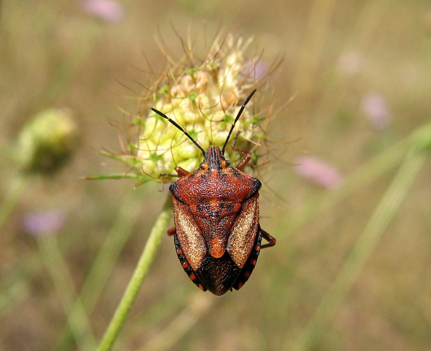
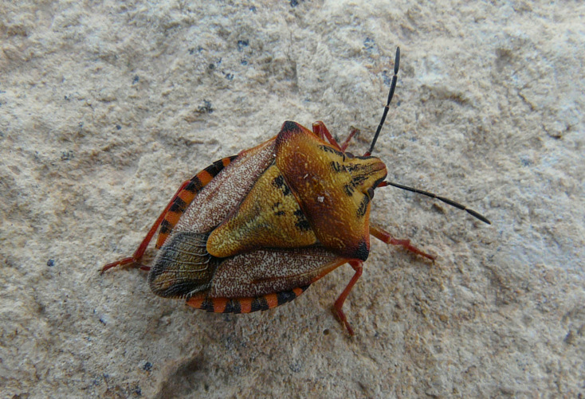
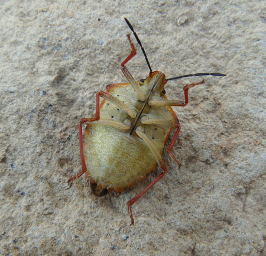
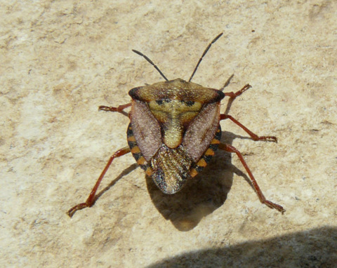
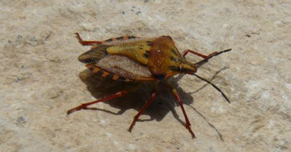

| PHRYGANA | Fauna | Flora |
additions nouveautés |
espèces species |
contact -
info - commentaires phrygana1 (at) gmail.com |
| diversité crétoise -- Cretan diversity | |||||
| Carpocoris
(Carpocoris) fuscispinus
(Boheman 1850) = mediterraneus Tamanini 1959 |
| 125 | Fauna | PENTATOMIDAE | Pentatominae | Carpocoris Kolenati 1846 |
|
 Carpocoris fuscispinus Apodoulou 09 juin 2005 |
| syn: Carpocoris mediterraneus Tamanini 1959 |
| Longueur du corps entre 10 et 14 mm. Couleur brun rouge. Antennes noires. Pattes brun clair |
| Régime alimentaire: phytophage |
| Période de vol: juin |
| Statut en Crète: indigène -- native |
| Biotopes en Crète: phrygana, olivaies, garrigue, bords de chemins. |
| Distribution: Europe méridionale, Turquie, Moyen-Orient. |
|
 Carpocoris fuscispinus Melambes (Agios Giorgos) 09 juin 2010 |
|
|
 Carpocoris fuscispinus Melambes (Agios Giorgos) 09 juin 2010 |
 |
|
 Carpocoris fuscispinus Melambes (Agios Giorgos) 09 juin 2010 |
|
| 25 mars 2011 |
| © paul fontaine -- © Phrygana.eu 2007 -- 2013 |